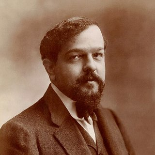

Compositores › Claude Debussy

Claude Debussy
El pintor de los sonidos: con armonías nuevas y difuminadas abrió el camino a la música del siglo XX.
Su vida
Nació en Saint-Germain-en-Laye, cerca de París. Entró en el Conservatorio de París a los diez años y en 1884 ganó el Prix de Rome, el premio más importante para los jóvenes compositores franceses.
Rechazó las reglas tradicionales de la armonía y buscó colores nuevos, inspirándose en la poesía, la pintura e incluso la música javanesa que escuchó en la Exposición Universal de París de 1889.
Escribió la ópera Pelléas et Mélisande, el poema sinfónico La mer y muchísima música para piano, entre ella los Preludios y los Estudios. Murió en París en 1918, durante la Primera Guerra Mundial.
Retrato: Atelier Nadar, dominio público, de Wikimedia Commons.

Curiosidades
- Se le llama «impresionista», como a los pintores Monet y Renoir, pero a él no le gustaba esa etiqueta.
- Claro de luna forma parte de la Suite bergamasque y toma su nombre de un poema de Paul Verlaine.
- Las dos Arabescas son obras de juventud, escritas entre 1888 y 1891: ya se percibe su estilo fluido.
Al piano
- Busca un sonido suave y difuminado: los dedos se hunden en las teclas sin golpearlas.
- El pedal forma parte del color, pero cámbialo cuando cambie la armonía.
- El tempo es flexible: deja respirar la música sin perder el hilo.
Sus piezas para aprender 3 piezas

Apréndela nota a nota con Piano Learning
Con «Espera la nota» la pieza se detiene hasta que tocas la tecla correcta, en el móvil o en tu propio piano (la app te escucha). Manos por separado, velocidad desde el 10 %, partitura siempre delante.
Descárgala gratis en Google Play Gratis como La Campanella, la Marcha turca, Jingle Bells y Frère Jacques. Cientos de piezas más con una única compra, sin suscripción.